Manjaro是一款基于Arch Linux、对用户友好、全球排名第一的Linux发行版。（排名数据源于DistroWatch，统计日期2018.08.22，时间段3个月。）
在Linux圈，Arch的确是一个异常强大的发行版。它有3个无与伦比的优势：
- 滚动更新可以使软件保持最新；
- AUR软件仓库有着世界上最齐全的Linux软件（参考《一张列表展示ArchLinux系软件有多丰富——看哭百万Debian、RedHat系同学》）；
- 丰富的wiki和活跃的社区让所有问题都可以快速得到满意的答案。
相比于Arch linux, 不得感叹, 人生苦短,我用 Manjaro啊!
一、Manjaro的安装
镜像下载
官方网站：https://manjaro.org/get-manjaro/
选择自己喜欢的桌面环境就好，目前官方支持包括xfce、kde、gnome三种桌面环境。而在官方的社区版本中提供更多桌面环境的支持，比如国产的deepin桌面环境
但是官方服务器在海外，所以我们也可以选择国内开源镜像进行下载
清华大学开源镜像：https://mirrors.tuna.tsinghua.edu.cn/manjaro-cd/
由于我基本都把上述的版本和一些社区版本安装过(出于各种原因>_<)，我建议是从官方网站下载最新的官方版本进行安装(好像清华大学源的镜像并不是最新的)，至于桌面环境的选择，看个人，我选择的是
KDE(其实，桌面环境在安装之后也是可以换的)。
制作U盘启动盘
manjaro官方提供的Manjaro User Guide手册里面介绍了使用 来制作镜像的方法许多方法，例如：
- Linux系统下，使用
dd命令来制作：sudo dd if=manjaro-xfce-17.1-stable-x86_64.iso of=/dev/sdc bs=4M,of指定烧录U盘的挂载位置; - 在windows系统下使用烧录软件
Rufus来进行烧录:
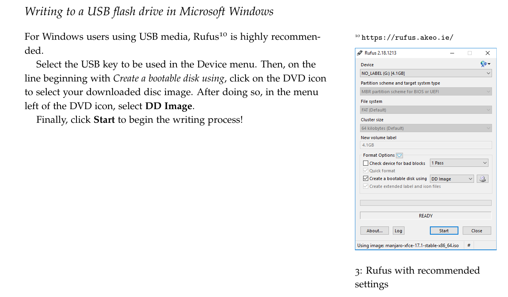
[注意]： 烧录完成后，在进入Live系统前，需要对BIOS进行一些设置，关闭安全启动。之后即可顺利进入这个界面(至于BIOS vs UEFI的启动进入的Live系统的方式，详见手册。由于我安装的是多个系统，所以是GPT+UEFI引导):
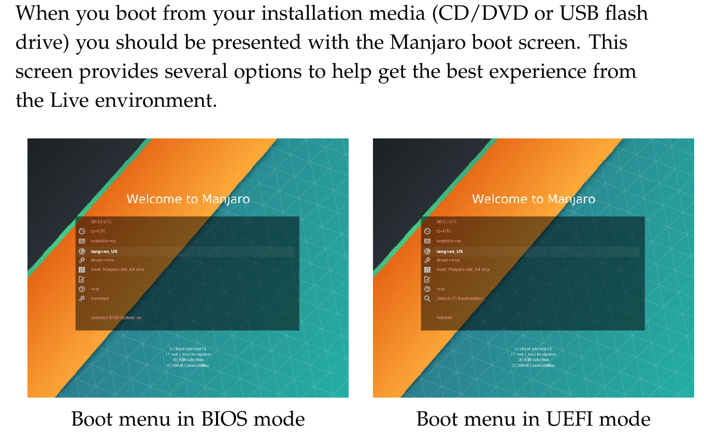
安装系统
进入启动菜单界面后，可以对一些基本的选项进行配置，如，时区，语言，键盘布局等。
具体的安装步骤请直接参考官网的Manjaro User Guide.pdf,这里主要说说安装系统时可能遇到的问题(我基本踩过的坑…)。
- 对于双显卡的电脑,特别是有Nvidia卡的: 在进入
live系统之前,可以将Driver选项设置为no-free(让系统自动安装合适的闭源驱动),并在boot项那里按E编辑, 在boot那一行将nouveau.modeset=1设置为nouveau.modeset=0来禁用开源nouveau驱动,然后进入Live安装系统。
但是,安装完系统后重启还有可能进不去桌面,可以尝试在Grub菜单启动界面按[E]编辑,找到quiet并在后面加入(注意空格):acpi_osi=! acpi_osi='Windows 2009'
或者acpi_osi=! acpi_osi=Linux acpi_osi='Windows 2015' pcie_port_pm=off
(很多硬件厂商的BIOS驱动都对Linux不友好(我的电脑就是这样的…)，无法顺利加载ACPI模块，而导致无法驱动独立显卡,acpi_osi=’Windows 2009’的意思是告诉ACPI模块，我是‘Windows 7’，别闹情绪了，赶紧工作吧。)
接着按 F10 进入系统。
顺利进入系统后,将这些内核启动参数配置永久生效(修改grub的配置文件):sudo vim /etc/default/grub
在GRUB_CMDLINE_LINUX中添加参数:
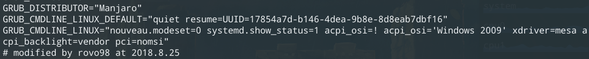
之后更新grub文件:sudo update-grub
或sudo grub-mkconfig -o /boot/grub/grub.cfg
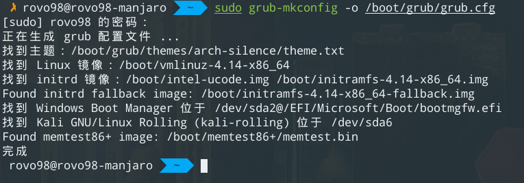
参考链接: - 启动时出现的
ACPI ERROR问题，很多都说是内核版本的原因，有尝试过添加内核启动参数acpi=off，启动正常进入系统，但键盘无法使用，所以这个提示ACPI错误的问题，由于不影响使用，可以不管(强迫症的可以再看看)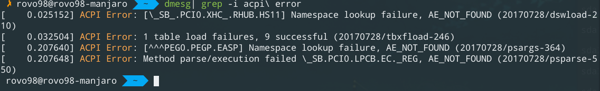
参考链接: https://forum.manjaro.org/t/acpi-error-during-boot/35125 - 屏幕亮度无法调节或异常的问题：
Arch Wiki已经给出很详细的解决方法:
链接: https://wiki.archlinux.org/index.php/backlight
例如：开机亮度设置:vim /etc/rc.local:1
2
3
4
5
6
7
8
9
10
11
12
13#!/bin/sh -e
#
# rc.local
#
# This script is executed at the end of the each multiuser runlevel.
# Make sure that the script will "exit 0" on successs or any other value on error
#
# In order to enable or disable this script just change the execution bits.
#
# By default this script does nothing.
echo 127 >> /sys/class/backlight/intel_backlight/brightness
exit 0
对于安装Manjaro系统出现的问题，大多数都可以在官方的论坛Manjaro Forum以及Manjaro Wiki，还有Arch Linux的Arch Wiki以及上找到解决方法。
二、Manjaro 配置
简单说一下一些安装系统之后的一些常规配置。
配置更新源并更新系统
配置中国的mirrors：
1
sudo pacman-mirrors -i -c China -m rank
在
/etc/pacman.conf中添加archlinuxcn源:1
2
3[archlinuxcn]
SigLevel= TrustedOnly
Server = https://mirrors.tuna.tsinghua.edu.cn/archlinuxcn/$arch安装
archlinuxcn-keyring:1
sudo pacman -S archlinuxcn-keyring
同步并更新系统；
1
sudo pacman -Syyu
安装配置中文输入法
安装中文输入法和
fcitx管理工具:1
2
3sudo pacman -S fcitx-sougoupinyin # 输入法看个人
sudo pacman -S fcitx-im
sudo pacman -S fcitx-configtool解决中文输入法无法切换问题: 添加文件
~/.xprofile:1
2
3export GTK_MODULE=fcitx
export QT_IM_MODULE=fcitx
export XMODIFIERS="@im=fcitx"
重启即可。
配置Intel 和 Nvidia 双显卡切换
Manjaro 提供了强大的硬件检测模块mhwd，可以很方便的安装各种驱动，要实现Intel 和 Nvidia 双显卡切换，我们需要安装video-hybrid-intel-nvidia-bumblebee nvidia闭源驱动和intel驱动的混合版bumblebee。对于之前安装系统是在Live启动菜单选择Driver=no-free的可以看看这个驱动是否已经安装：
系统设置中的硬件设置:
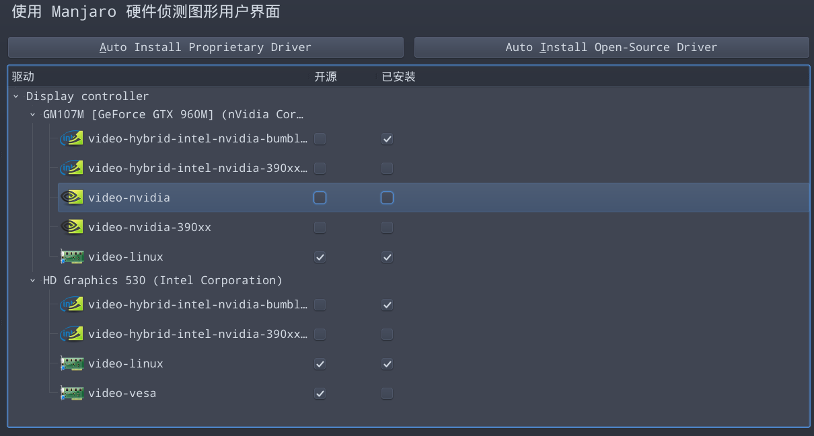
或
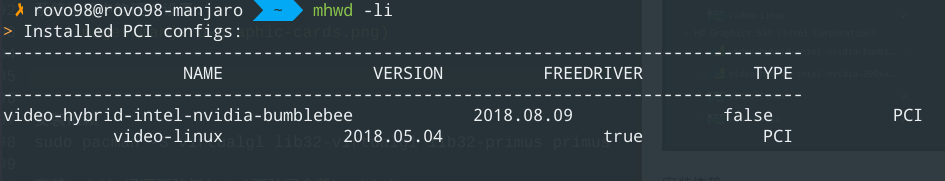
对于未安装的，这里提供一个最为简单的方式，直接在硬件设置中，右键安装即可，这样可以省去自己去添加用户组和开机启动，以及切换状态初始化
[注意：] 下面的这些依赖必须安装，否则会出现独立显卡无法正常工作的问题(fps跟集成显卡差不多)：
1 | sudo pacman -S virtualgl lib32-virtualgl |
对于独立显卡的使用，可以使用bbswitch来进行切换开关，然后使用optirun来运行程序:
- 首先查看显卡的状态:
lspci | grep -i nvidia(rev ff 表示关闭状态)
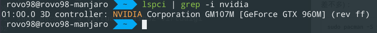- 打开独立显卡，并进行测试，对比集成显卡的fps：
- 集成显卡 FPS:
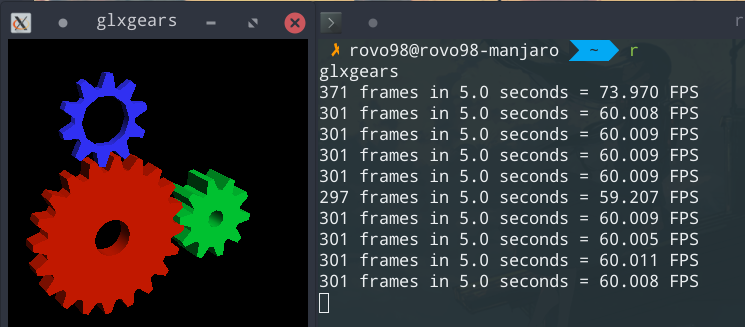- 打开独立显卡
sudo tee /proc/acpi/bbswitch <<< "ON",测试FPS:
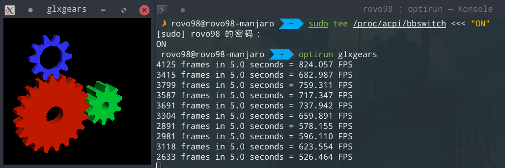- 独立显卡设置 nvidia-settings 需要用
optirun nvidia-setting -c :8才能打开:
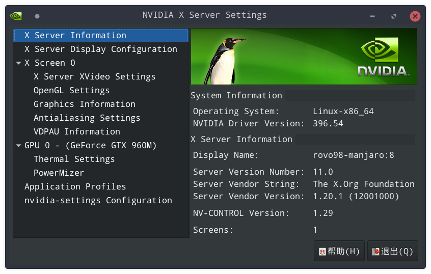
使用 zsh 和 oh-my-zsh 配置终端
zsh shell(theme: rjkirch_mod)：
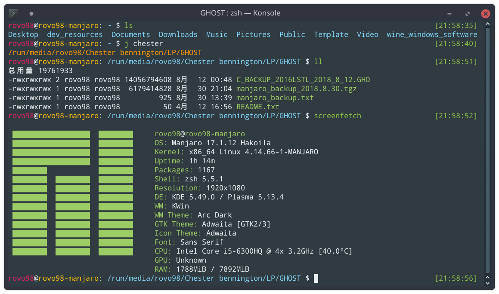
基本配置过程：
- 查看系统安装了多少shell
cat /etc/shells - 查看当前shell :
echo $SHELL - 使用
chsh切换默认shell.
配置 zsh，直接使用oh-my-zsh来进行配置: Oh-my-zsh.
zsh 主题可以自行按个人喜好配置，当然也可以随机(每次打开终端都随机选择一个主题).
插件推荐: (插件配置太多的话，会使shell启动速度变慢，适当就好)
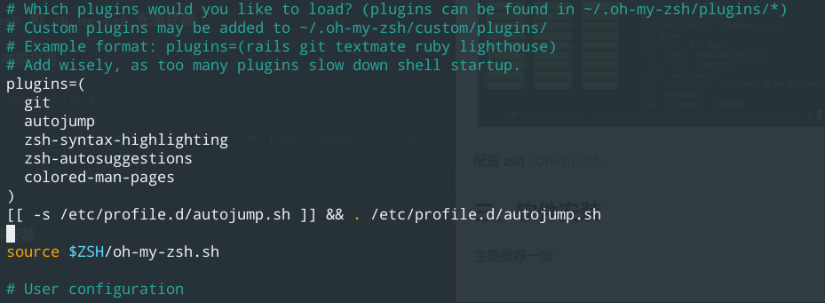
总结
Manjaro的安装和基本配置就到此结束。最后，简单说一下我安装此系统的缘由。在安装manjaro之前，我使用的是win10 LTSB 2016，之前接触过的的Linux发行版是CentOS, Unbuntu以及 kali， 前两者我不怎么想要，本来想直接换成kali，但是考虑到kali一般是作为一个工具来使用，并不适合我平时开发和日常使用，就再次寻找适合的Linux发行版，最后看上了Arch Linux，但是又因为Arch上手难度较高，退而求其次，选择了Manjaro。当然啦，Win10肯定是要保留的，Kali也是要的。
于是乎，在原先的GPT+UEFI引导方式的基础之上，我重新分配了我的磁盘，将原有的Win10系统盘缩小，把它当备用系统，Manjaro作为主要系统使用，而Kali只作为工具使用，其他的磁盘分区作为数据存放的分区，各个系统共用。
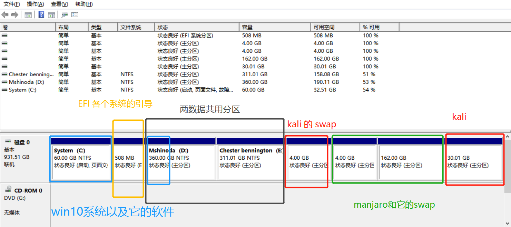
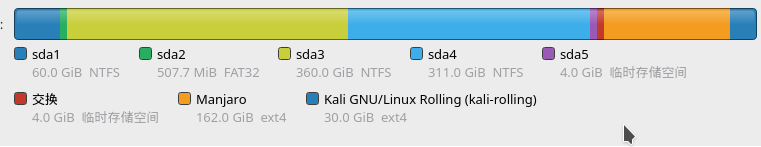
说明: 对于上面给出的分区方案仅供参考，例如: 对于Linux的swap分区(用于虚拟内存的置换)来说，由于系统启动时会对swap进行初始化，因此多个系统可以使用一个swap分区即可。只要配置UUID没错就行了，毕竟多系统主机每次也只能启动一个系统。。。
上面的分区旨在演示，基于GPT (GUID Partion Table 分区表(可以分128主要分区，而MBR(Master Boot Record)分区表只能是4个主要分区, 请自行了解两者的区别) 使用UEFI(Unified Extensible Firmware Interface)如何为安装多系统做准备。
然后使用 REfind来管理和引导系统:

对于Refind有兴趣的可以直接google或baidu了解一下，选择一个现有的主题然后自己稍微进行配置一下，就可以了。
参考:
各个系统桌面
- Win10 LTSB
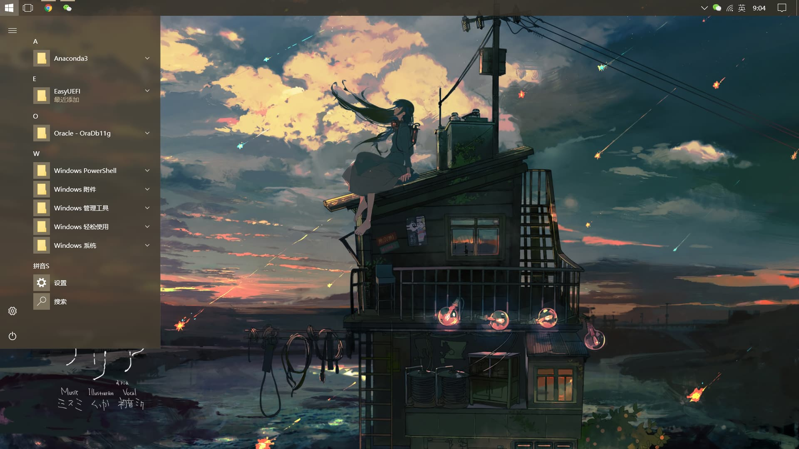
- Manjaro(DE: KDE)
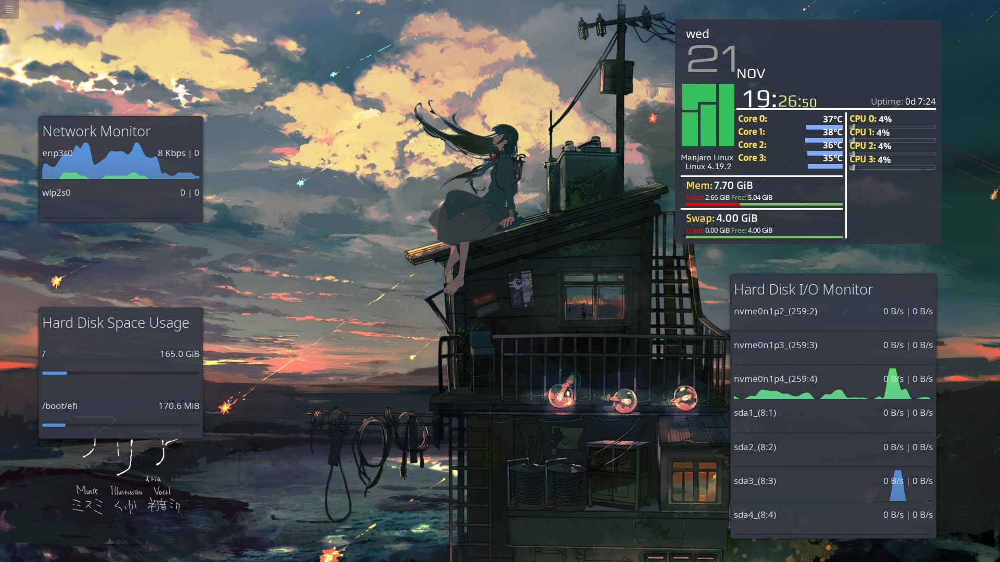
- Kali
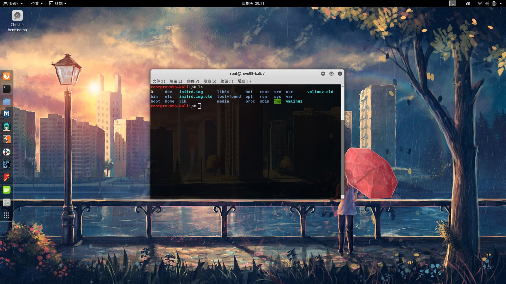